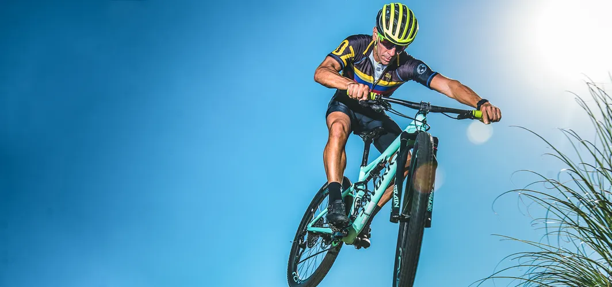
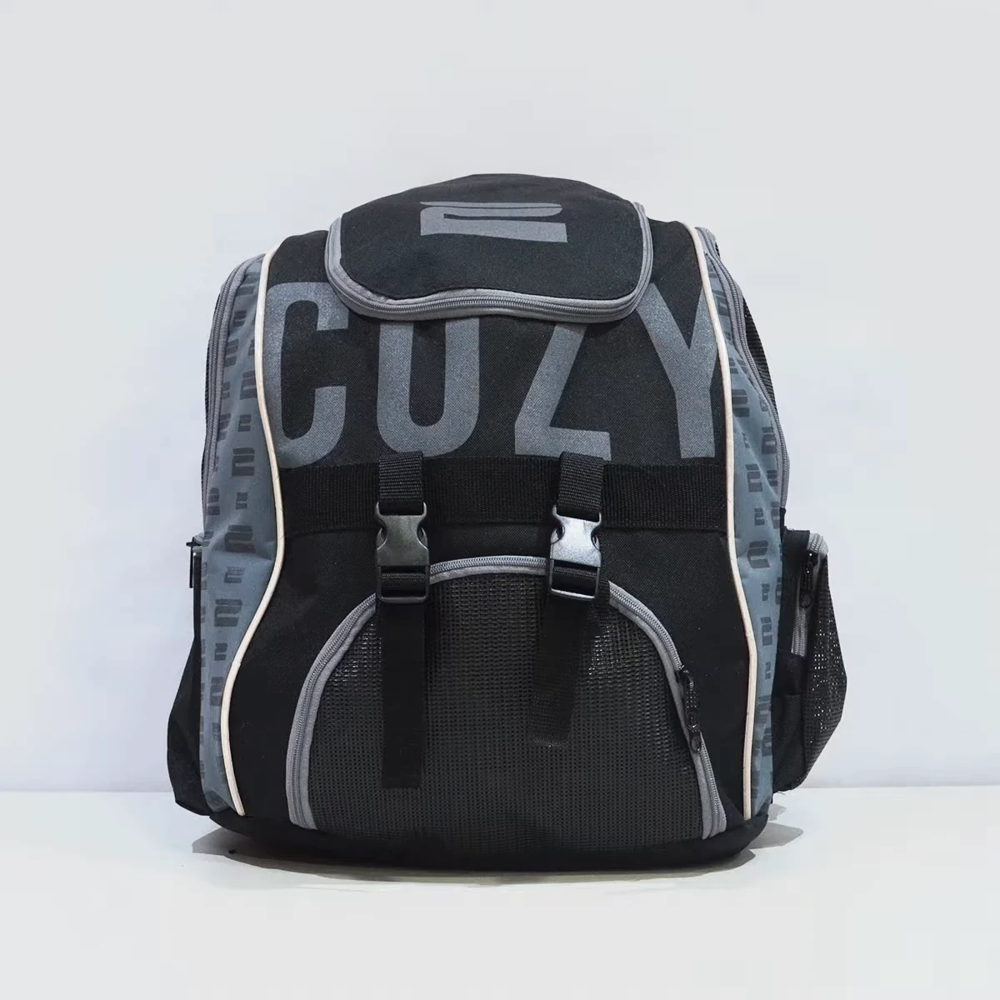
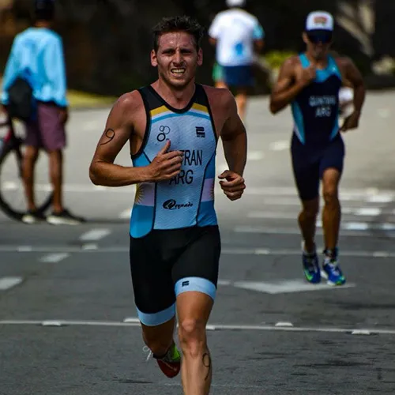
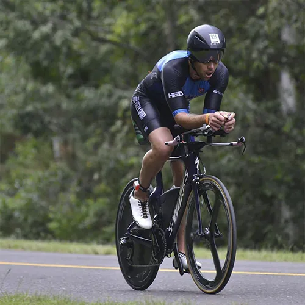
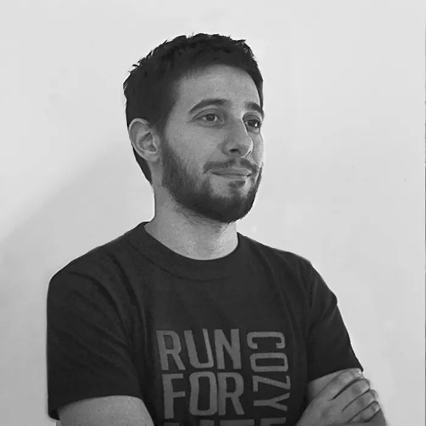
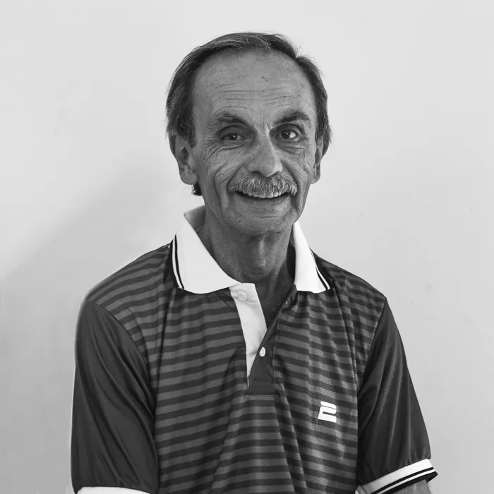
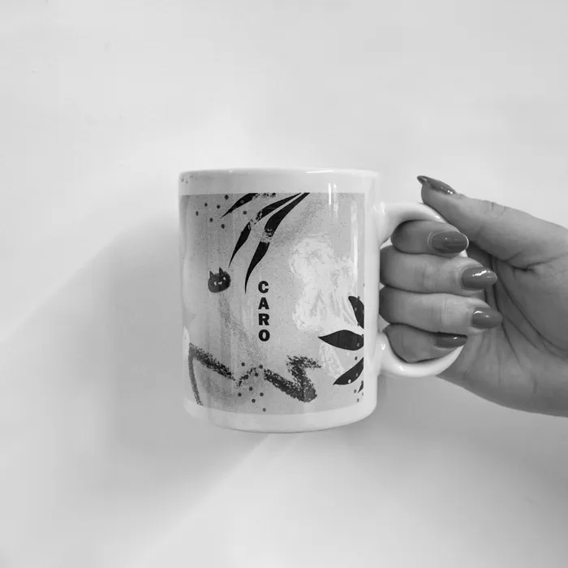
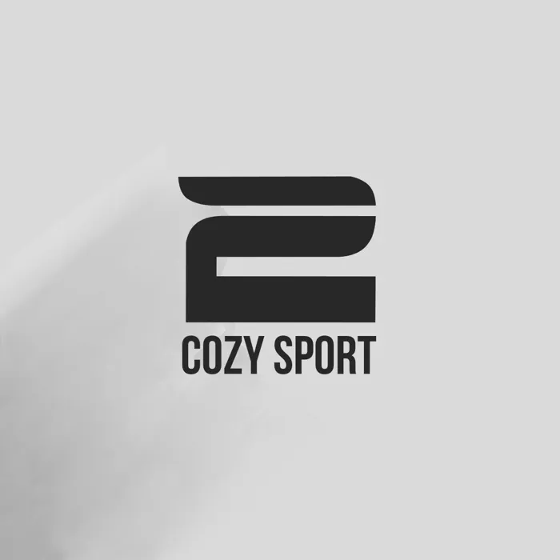

Indumentaria deportiva personalizada
Hecho por argentinos para el mundo.
Somos una empresa familiar. Diseñamos y confeccionamos indumentaria deportiva pensando cada prenda como única, para que la persona que la usa sienta que es especial.

- Proyectos completados
- 4.982
- Impresiones
- 158.962
- Clientes satisfechos
- 2.589
- Países a los que enviamos
- 10
01
Nosotros
Somos un equipo, comprometido a crear tus sueños.
Tenemos nombre en inglés pero no somos importados: somos industria nacional. Cozy, que en inglés significa confortable, nació en 1983 y hoy viste a deportistas amateurs y profesionales.
Somos una empresa familiar, por lo que cada prenda lleva nuestro cariño.
“No hacemos por hacer: pensamos cada producto como único.”
-
I
Tus ideas son nuestro engranaje
Tus dibujos, imágenes, colores, todo lo que te inspire nos sirve para conocerte y llevar a cabo nuestro mejor trabajo.
-
II
Imagen
Desarrollamos un outfit con lo que nos transmitiste: antes de que algo se imprima, lo tenés que ver como lo soñaste.
-
III
Despegue
Una vez que está todo aprobado, despegamos con todos los departamentos de Cozy para que el producto salga en tiempo y forma. ¡Siempre cuidando los detalles!



02
Nuestro servicio

Fig. 05 Indumentaria y accesorios: ¡todo lo que necesites!
Brindando el mejor servicio.
- A
Diseños personalizados
Pasamos tus ideas a formato digital.
- B
Bocetos
Bocetos a mano alzada, siempre buscando nuevas tendencias.
- C
La meta
Llegar a la meta, cumpliendo con tus expectativas.
- D
Volamos a tu lado
Estamos juntos en este viaje, ¡desde el primer momento hasta la competencia!
- E
El color que esperás
Utilizamos las mejores tintas del mercado para llegar al color que imaginaste.
03
Nuestra historia
De un local en 1983 a un taller que viste campeones.
- 1983
Abre el primer local
Comienza una etapa especial en la Argentina y, así, una idea de cambio. Inaugurábamos nuestro local de venta al público, con prendas exclusivas y talles especiales.
- Los 90
Nos consolidamos
Con el correr de los años fuimos creciendo y, por los 90, nos consolidamos.
- La pausa
Una mala jugada
Los problemas del país y la entrada de prendas importadas nos hicieron una mala jugada y nos apagamos.
- Renacer
Nace Cozy Sport
Buscamos una forma de reinventarnos: de ser una marca solo de moda informal pasamos a la confección de indumentaria deportiva y a llamarnos “Cozy Sport”.
- El taller
Del piso a la mesa de corte
Pasamos de cortar en el piso a tener una mesa de corte, de tener una máquina de coser a tener un taller. Siempre apostando a la industria nacional.
- Hoy
Una familia, muchos deportistas
Estamos junto a los deportistas amateurs y a los profesionales: todos son parte de esta familia.

En 1983 comienza una etapa especial en la Argentina y, así, una idea de cambio. Inaugurábamos nuestro local de venta al público, con prendas exclusivas y talles especiales. Cozy, que en inglés significa confortable, comenzaba su recorrido.
Con el correr de los años fuimos creciendo; por los 90 nos consolidamos, pero los problemas del país y la entrada de prendas importadas nos hicieron una mala jugada y nos apagamos. Pasó el tiempo y buscamos una forma de reinventarnos: nos diversificamos y, de ser una marca solo de moda informal, pasamos a la confección y creación de indumentaria deportiva y a llamarnos “Cozy Sport”.
Comenzamos de nuevo. Pasamos de cortar en el piso a tener una mesa de corte, de tener una máquina de coser a tener un taller; siempre apostando a la industria nacional, a fabricar algo diferente, algo con valores, algo argentino.
Somos una empresa familiar, por lo que cada prenda lleva nuestro cariño. No hacemos por hacer: pensamos cada producto como único, para que la persona que lo usa sienta que es especial. Tenemos nombre en inglés pero no somos importados, sino que somos industria nacional, hecho por argentinos para el mundo.
Estamos junto a los deportistas amateurs y a los profesionales: todos son parte de esta familia. ¡Gracias por compartir este crecimiento!
— La familia Cozy Sport
04
Deportistas #TeamCozy
Conocé a los que transpiran.
Estos son los deportistas que nos representan. Pasá el cursor sobre cada nombre para ver su foto.
- 01

Fabián Ayala
FootgolfistaCampeón Argentino 2017 - 02

Matías Perrone
FootgolfistaCampeón Mundial 2018 - 03

Nico García
FootgolfistaNúmero 3 del mundo. Campeón Europeo 2018 - 04

Oscar García
TriatletaCampeón Mundial X-Terra - 05

Santiago Beltrán
TriatletaTop 10 Argentino - 06

Brenda Rosso
TriatletaTop 10 Argentina - 07

Ibrahim Alucín
TriatletaJoven triatleta, gran proyección - 08

Maxi Passadore
TriatletaParticipó de cuatro Ironman World Championship - 09

Cintia Coronel
Corredora de fondoFondista - 10

Ignacio Fernández Gorgolas
FootgolfistaCampeón Argentino 2010 – 2011 y Subcampeón Argentino 2017 - 11

Yamil Amuch
TriatletaTriatleta Elite Argentino - 12

Belén Pilara
TriatletaTriatleta pilarense - 13

Emma Iodice
TriatletaCampeón Argentino de media distancia - 14

Ceci Caillabet
TriatletaTriatleta destacada y coach en C3 Equipe - 15

Ezequiel Vázquez
Footgolfista profesionalMundialista en 2016 y 2018
05
El equipo
Conocé el equipo de Cozy Sport.
Como en todo buen equipo, cada uno juega en su puesto: del primer trazo al embalaje.

Damián
Director
Apasionado de los deportes y de crear cosas diferentes todos los días.

Tomás
Diseñador
Creador incansable de diseños, es el encargado de entender tus ideas y transformarlas.
Mariana
Ventas
Atenta a lo que necesites, siempre con una sonrisa.

Daniel
Armado de pedidos
Control de pedidos y embalaje.

Juan
Producción
Encargado de que el taller funcione y tus prendas estén a tiempo.

Francisco
Marketing y redes
¡Su carisma hace que siempre esté sonriente!

Caro
Diseño
¡Apasionada dibujante y creativa!

Leandro
Ventas
¡Atento al cliente y a sus inquietudes!
Cozy
Ventas
¡Alma deportiva!

Tienda online
Apasionados por el deporte.
Ingresá a nuestra tienda online. Comprá desde tu casa, nosotros te lo llevamos.
Ir a la tienda06
Contactanos
¡No dudes en escribirnos!
info@cozysport.com- Fábrica · Cozy Sport SA
- Uruguay 3442 – Beccar
Buenos Aires – CP 1643
Argentina ↗